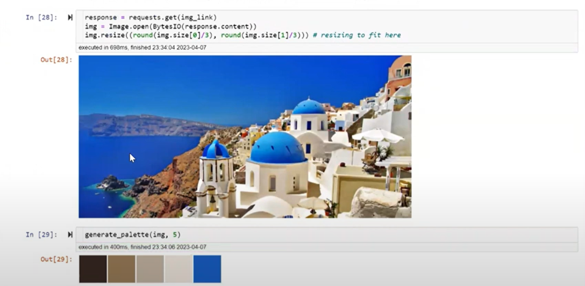

Unsupervised Learning with K-Means Clustering: Generate Color Palettes from Images

A comprehensive guide to unsupervised ML and the K-Means algorithm with a practical application of grouping image pixels.
Predicting Hazardous Seismic Bumps Part I : EDA, Feature Engineering & Train Test Split for Unbalanced Dataset

This article demonstrates exploratory data analysis (EDA), feature engineering, and splitting strategies for unbalanced data using the seismic bumps dataset from the UCI Data Archive.
Predicting Hazardous Seismic Bumps Part II: Training & Tuning Supervised ML Classifiers and Model Performance Analysis

This article demonstrates predicting hazardous seismic bumps using different supervised classifiers, tuning model hyperparameters, accuracy paradox and importance of understanding “business problem” for ML model's performance assessment.